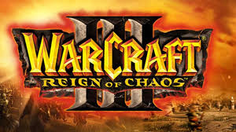

Wars & Warriors: Joan of Arc - историческая компьютерная игра. Разработанный и опубликованный Enlight, он был выпущен в 2004 году. Игрок принимает на себя роль Жанны д'Арк и возглавляет французов в их попытке выиграть Столетнюю войну. Игра сочетает в себе аспекты стратегии и действий в реальном времени.
Wars & Warriors: Joan of Arc - историческая компьютерная игра. Разработанный и опубликованный Enlight, он был выпущен в 2004 году. Игрок принимает на себя роль Жанны д'Арк и возглавляет французов в их попытке выиграть Столетнюю войну. Игра сочетает в себе аспекты стратегии и действий в реальном времени.
 Warcraft III: Reign of Chaos (от англ. warcraft — военное ремесло, reign of chaos — господство хаоса) — компьютерная игра в жанре стратегии в реальном времени с элементами RPG. Разработана компанией Blizzard Entertainment при поддержке Vivendi Universal и выпущена в июле 2002 года.
 Grand Theft Auto: San Andreas (сокращенно GTA: San Andreas, GTA: SA) — компьютерная игра в жанре Action-adventure, разработанная британской студией Rockstar North и изданная американской международной компанией Rockstar Games; пятая по счёту и третья трёхмерная игра во франшизе Grand Theft Auto. Для консоли PlayStation 2 игра была выпущена 26 октября 2004 года в Северной Америке и 29 октября 2004 года в Европе и Австралии.
Grand Theft Auto: San Andreas (сокращенно GTA: San Andreas, GTA: SA) — компьютерная игра в жанре Action-adventure, разработанная британской студией Rockstar North и изданная американской международной компанией Rockstar Games; пятая по счёту и третья трёхмерная игра во франшизе Grand Theft Auto. Для консоли PlayStation 2 игра была выпущена 26 октября 2004 года в Северной Америке и 29 октября 2004 года в Европе и Австралии.